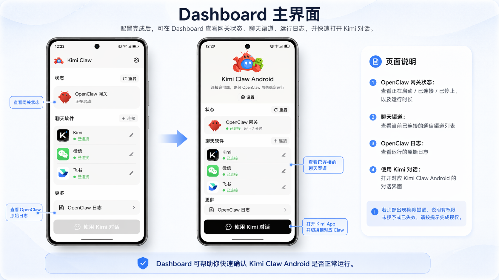

KimiClaw 这两年：一个 AI Agent 是怎么从云端跑到你手机上的
从只有云端托管到 Android 终端、桌面端本地部署，KimiClaw 的迭代路线藏着团队的清晰逻辑——他们一直在把 Agent 往你身边推。
现状：一个 Agent 有三种住法
现在打开 KimiClaw 的官网，你会看到一个有意思的局面——同一个 AI Agent，官方给了它三套完全不同的"住处"：云端托管版跑在 Moonshot 的虚拟机里、Android 终端版占着你闲置手机的后台、桌面端版直接把 OpenClaw Gateway 装到你的电脑本地。三选一，也可以同时开。

这在两年前是不可想象的。我还记得最早那会，想跑 Claw 只能老老实实掏钱买会员，实例全在云端，你能操作的也就是 Kimi 官方给的那套控制界面。那时候谁能想到，今天你可以让一个 Agent 真的住在你口袋里的备用机上，帮你定时查快递、自动刷小红书？
来路：三次形态迭代，每次都是赌注
仔细翻KimiClaw文档能挖出一些关键的时间节点。
第一次大的迭代是 Android 终端版的上线——这个决定很激进。让一个 AI Agent 跑在用户自己的安卓手机上，意味着 Claw 要获得屏幕读取、模拟点击、相机、GPS、通知这些硬件级权限。文档里写得很直白："不是云端虚拟机，是你手机上的独占进程"。这背后的技术挑战可以想象——怎么让 Android 不把后台进程杀掉？怎么处理电量耗尽自动关机？怎么在手机休眠时保持连接？团队给出的答案也很务实：建议用闲置手机、插着电源、开自启动、关电池优化——不跟系统对抗，而是绕开主力机这个战场。
2025 年 3 月 9 日是另一个分水岭。那天之后新创建的 KimiClaw 实例，默认就带企业微信插件了。这个变化看似微小，实则暴露了一个优先级——聊天渠道的覆盖正在从"可选配件"变成"出厂标配"。更早的时候，飞书、微信、企微这些渠道都需要手动装插件、输凭证、跑长连接配置，一套流程下来新手能被劝退。现在企微接入已经简化到四步：创建机器人、发两个 ID 给 Claw、再贴一段配对信息、完事。文档里那个"把凭证发给 Claw"的截图，背后是团队把几十行配置代码封装成了自然语言交互。
然后是桌面端本地部署——"部署到我的电脑"这五个字，标志着 Claw 从"只能住在厂商服务器上"彻底变成了"可以安家在任何设备上"。这个功能的文案写得很克制：点击按钮后，系统自动从官方下载拉取 OpenClaw Gateway 二进制文件，装到 ~/.openclaw/ 或 C:\Users\<用户名>\.openclaw\，配置好默认模型，连上联网搜索和技能库，整个过程 1-3 分钟。没有炫技，就是把本地部署这件事做到了和建云端实例一样简单。

规律：他们一直在死磕什么
把这三次迭代串起来看，团队的优先级清晰得可怕——扩大 Agent 的"落脚点"，让它离用户越来越近。
从云端虚拟机到用户手机，再到用户的电脑本地，每一步都在缩短 Agent 和真实世界之间的距离。云端版的能力边界是"AI + 联网 + 技能库"，到了 Android 版突然就多出了"操控手机 App + 接入传感器"，到了桌面端又多了本地文件系统和更稳定的常驻进程。这不是在堆功能，是在给 Agent 换更好的"身体"。
反过来看，有什么事他们一直没做？文档里反复提到"云端版能保证 7×24，Android 版取决于手机是否开机"——他们没去给 Android 版搞什么保活黑科技，而是老老实实说清楚边界。微信的智能机器人接入至今还不支持自建小程序形态，企业微信的微信插件也暂不支持——这些"应该有"的功能，团队要么直接禁止（金融类 App 自动封锁），要么不急着做。
还有件小事挺有意思：所有形态的 Claw 都用同一套 /status 和 /logs 命令做诊断。这个统一的终端界面，从第一天就没变过——不管底层是云端虚拟机还是安卓进程还是本地网关，用户敲命令得到的是同样结构的状态输出。这种跨形态的一致性，恰恰说明团队在扩张部署方式的同时，刻意保持了核心体验的稳定。
预判：照这个路线，下一步会是哪
从迭代规律推，而不是从官方公告猜——我觉得有两个方向值得留意。
第一个方向是更轻量的终端形态。现在 Android 版已经跑通了，但手机终究还是个大家伙。如果团队继续沿着"离用户更近"的逻辑走，有没有可能把 OpenClaw Gateway 塞进更便携的设备？比如智能音箱、比如便携小主机？当然这是从现有路线推导的，不当官方口径传。
第二个方向是聊天渠道的进一步融合。现在飞书、微信、企微已经全覆盖了，但文档里还提到"暂不支持以自建小程序形态完成智能回复"。如果这个功能补上，意味着 Claw 可以直接嵌进微信生态的小程序里，不需要用户先去加机器人好友。这对新用户的门槛降低是巨大的。
不过说回来，这些都是从迭代节奏反推的。真正值得期待的，还是那个"把 Agent 往你身边推"的逻辑能走到多远——毕竟两年前谁能想到，今天我们能让一个 AI 住在自己的备用机里，帮我们查快递、领优惠券、刷小红书？
最后补一句：这套资料我在三个仓库都同步了一份，怕一个挂了找不着——GitHub 上的 alipymanbu/APK、Gitee 上的 manbu1103/APK、GitCode 上的 qq352325405/APK，路径都是官方版下面的 KimiClaw 目录。